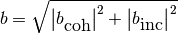

Basic Nuclear Data – pyne.data¶
This module provides a top-level interface for a variety of basic nuclear data needs. This aims to provide quick access to very high fidelity data. Usually values are taken from the nuc_data.h5 library.
All functionality may be found in the data module:
from pyne import data
Atomic Weight¶
- pyne.data.nuc_weight(nuc)¶
Finds the weight of a nuclide in [amu].
Parameters : nuc : int or str
Input nuclide.
Returns : weight : float
Atomic weight of this nuclide [amu].
Notes
If the nuclide is not found, the A-number is returned as a float.
- pyne.data.nuc_weight_map¶
A mapping from zzaaam-nuclides to their mass weights. This is used by nuc_weight() under the hood.
Decay Data¶
- pyne.data.half_life(nuc)¶
Finds the half-life of a nuclide in [seconds].
Parameters : nuc : int or str
Input nuclide.
Returns : hl : float
Half-life of this nuclide [seconds].
Notes
If the nuclide is not found, the nuclide is assumed to be stable.
- pyne.data.half_life_map¶
A mapping from zzaaam-nuclides to their half lives. This is used by half_life() under the hood.
- pyne.data.decay_const(nuc)¶
Finds the decay constant of a nuclide in [1/seconds].
Parameters : nuc : int or str
Input nuclide.
Returns : dc : float
Decay constant of this nuclide [1/seconds].
Notes
If the nuclide is not found, the nuclide is assumed to be stable.
- pyne.data.decay_const_map¶
A mapping from zzaaam-nuclides to their decay constants. This is used by decay_const() under the hood.
Neutron Scattering Lengths¶
- pyne.data.b(nuc)¶
Finds the bound scattering length of a nuclide in [cm].
Parameters : nuc : int or str
Input nuclide.
Returns : b : float
Bound scattering length of nuc [cm].
Notes
If nuc is not found, the value for a nuclide with the same A-number is used instead. If still no value is found, the an isotope of the same element as nuc is used. If still no values are found, zero is returned.
This value is computed from the coherent and incoherent scattering lengths as follows:

- pyne.data.b_map¶
A mapping from zzaaam-nuclides to their bound neuton scattering lengths. This is used by b() under the hood.
- pyne.data.b_coherent(nuc)¶
Finds the coherent bound scattering length of a nuclide in [cm].
Parameters : nuc : int or str
Input nuclide.
Returns : bc : complex
Coherent bound scattering length of nuc [cm].
Notes
If nuc is not found, the value for a nuclide with the same A-number is used instead. If still no value is found, the an isotope of the same element as nuc is used. If still no values are found, zero is returned.
- pyne.data.b_coherent_map¶
A mapping from zzaaam-nuclides to their bound coherent neuton scattering lengths. This is used by b_coherent() under the hood.
- pyne.data.b_incoherent(nuc)¶
Finds the incoherent bound scattering length of a nuclide in [cm].
Parameters : nuc : int or str
Input nuclide.
Returns : bi : complex
Incoherent bound scattering length of nuc [cm].
Notes
If nuc is not found, the value for a nuclide with the same A-number is used instead. If still no value is found, the an isotope of the same element as nuc is used. If still no values are found, zero is returned.
- pyne.data.b_incoherent_map¶
A mapping from zzaaam-nuclides to their bound incoherent neuton scattering lengths. This is used by b_coherent() under the hood.